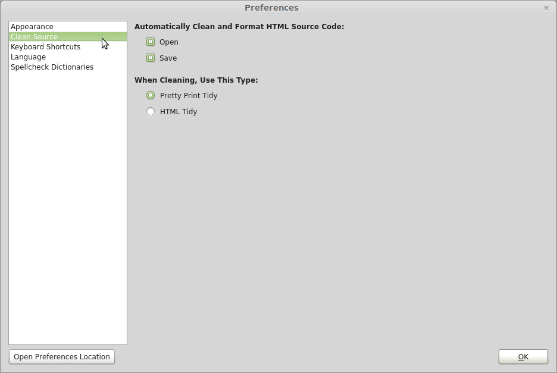

— Customise Sigil —
The Preferences dialog gives you control over many settings in Sigil.
Select the menu item to open the Preferences dialog:
You can change the following settings (see below for details):
Once the Preferences window is open you can choose the area you want to modify by clicking on the entry on the left. Selecting or closing the window will save the current settings.
Appearance settings do not affect how your EPUB is displayed on ereaders!
You can modify the fonts and colors that Sigil uses to display your book while editing:
The settings that can be changed include:
The default fonts for Book View and Code View are Arial and Times New Roman. If these are not available on your system the preferences will default to the first available font.
You can set the level of automatic formatting and cleaning that is performed on your HTML source code, and when cleaning should be done.
The default setting is to clean when opening or saving EPUBs and to use Pretty Print Tidy. This means that Sigil will re-format your source code to make it more readable and easier to search, and it will try to correct simple errors that make the code invalid.

You can control when automatic cleaning and formatting of your code is done with the following options:
If an HTML file is not well-formed due to invalid code, then Sigil will prompt you to confirm opening or saving if automatic cleaning is enabled.
If you open an invalid EPUB without automatic clean on Open, then a list of the invalid files will be displayed.
You can set the following levels of cleaning:
The ability to disable automatic clean on Save means you can save an invalid EPUB as is so you can continue working on it later. Make sure you disable Clean on Open as well.
You can view all the keyboard shortcuts assigned to functions in Sigil – and change them to what you prefer. So if you want F12 to always open Find & Replace then you can change it here.
You can also assign or re-assign a shortcut temporarily if you need a function to be easier to access for a short time.
To set or change a shortcut:
Use to change all shortcuts back to their defaults.
Use the Filter text box to easily search for shortcuts.
You can set the language of Sigil’s interface and the default language of your book:
Sigil’s user interface has been translated into many languages:
You can select from the available languages using this option. If a translation is not available for specific words then they will be shown in English.
You must restart Sigil in order for the new user interface language to take effect.
Try setting the interface to another language and restarting Sigil to see the translations volunteers have created.
This option sets the language that will be selected in the Metadata Editor for new books or books that do not already have a language set.
Sigil supports spell checking in Code View, and allows you to choose standard and personal user dictionaries:
Enabling this option will highlight misspelled words in Code View with a red wavy underline. You will then be able to right-click on the word to select a suggested correction or add it to a dictionary.
Sigil includes several standard dictionaries: US English, British English, French, German, Spanish. You can select one using the Dictionary drop-down menu.
If you want to add new standard dictionaries (which must be in the hunspell format) then you can click on the button and go into the "hunspell_dictionaries" directory. Put your new dictionary files into the "hunspell_dictionaries" directory.
To add other standard dictionaries, such as ones found at the OpenOffice Dictionaries site, download, extract, and copy the files, e.g. en_GB.aff, en_GB.dic, hyph_en_GB.dic to the "hunspell_dictionaries" directory location and restart Sigil.
You can create your own personal user dictionaries, and even use different ones for different books and different types of words (Places, Names, etc.).
If you have not created any user dictionaries, Sigil will create and enable a "default" user dictionary for you, which you can rename or delete.
To create a new user dictionary, select under User Dictionaries on the left and then enter a name for your new dictionary:
When you select a user dictionary on the left, you will see the words for that dictionary on the right which you can then add, edit, or remove.
To add words directly to a user dictionary, select the dictionary and then click on on the right. You can then type in as many words as you want or paste them in from a file – words can be separated by commas, spaces, or listed one per line.
You can also add words to a dictionary using Spellcheck, or by right-clicking on misspelled words in Code View and selecting one of the Add To Dictionary options.
Selecting a dictionary makes it the default dictionary – this is used when you add words using the Add Misspelled Word shortcut or the menu item Add To Default Dictionary.
You can copy a complete dictionary using , and then rename it as needed.
You can select which user dictionaries are enabled by marking the checkbox next to the dictionary’s name. All enabled dictionaries will be used when checking words to see if they are misspelled.
You can enable more than one dictionary at a time.
The button on all the Preferences screens can be used to open the directory containing all of your preference files. You can copy the files for backup or for sharing with others.
The preferences location will likely be in the following locations:
Windows:
…\Local Settings\Application Data\sigil-ebook\sigil
MAC:
~/Library/Application\ Support/sigil-ebook/sigil/
Linux:
$HOME/.local/share/sigil-ebook/sigil
And the files you are likely to see will include: